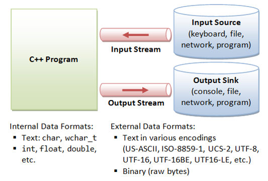

6.4 SEQÜÈNCIES EN C++: STREAMS

Per poder treballar amb streams, cal incluir les llibreries fstream o iostream. C++ utilitza diferents streams:
-
Streams d'entrada:
- istream: crea l'stream cin, connectat amb l'entrada per teclat.
- ifstream: permet l'entrada desde fitxer, havent de crear una variable ifstream i associar-la al fitxer d'on es vol llegir.
-
Streams de sortida:
- ostream: crea l'stream cout, connectat amb la sortida per pantalla.
- ofstream: permet la sortida a fitxer. Funciona igual que el ifstream.
-
Streams d'entrada/sortida:
- iostream: crea cin i cout com a variables globals i els conneta amb l'entrada per teclat i a sortida per pantalla, respectivament.
- fstream: permet llegir i escriure a fitxer, cal declarar variables i associar-les a un fitxer.
Seqüències amb fitxers
#include
...
int main(){
...
ifstream f_entrada;
f_entrada.open("dades.dat"); //pot tenir qualsevol extensió
...
ofstream f_sortida;
//El fitxer ha de estar en el mateix directori que el .cpp, si no hi és hem d'indicar el directori complet
f_sortida.open("C:\\prova\\out.txt"); /*les rutes en Windows porten el
símbol \, que en C++ es representa com a \\ (en UNIX s’usa /)*/
...
string nom_fitxer;
cin>>nom_fitxer;
ifstream fitxer_in(nom_fitxer.c_str()); //cal usar .c_str() si tenim el nom en una variable.
...
fstream fitxer("dades.dat",fstream::in); //fstream de lectura. Al usar fstream cal activar lectura o escriptura (fstream::in o fstream::out)
...
}
Funcions fstreams
Associació variable i fitxer
- var.open(nom_fitxer); associa el fitxer a la variable
- var.close(); Tanca el fitxer desvinculant-lo. Es fa automàticament quan la variable dexia d'existir, pero és necessari si la variable s'ha d'associar a un segon fitxer o si el fitxer ha de canviar de modalitat (entrada <-> sortida)
Seqüències d'entrada i seqüències de sortida.
Seqüències d'entrada: lectura
Per llegir una seqüència es pot usar:- L'operador d'extraccio >> que llegeix amb format (d'acord amb el tipus de la variable).
Exemple:
Pels tipus numèrics i les strings, >> llegeix fins a trobar-se un white-space (ws) i converteix el valor llegit al tipus de la variable. Els white-spaces (WS) són els caràcters no visibles del codi ASCII. El C++ els empra en la lectura amb format. El més habituals són: ' '(espai) '\r'(enter) '\n'(salt de línia) '\t'(tabulador). Si és un caràcter, llegeix només un caràcter, ometent els espais en blanc.ifstream fitxer("nom_fitxer.txt"); unsigned n; fitxer>>n; //cin>>n; string paraula; fitxer>>paraula; //cin>>paraula; char lletra; fitxer>>lletra; //cin>>lletra; -
Lectura de caràcters:
- .get() llegeix caràcters sense ometre ws. Aquest efecte també es pot aconseguir amb >> usant l'opció noskipws
char lletra = fitxer.get(); //lletra=cin.get(); fitxer.get(lletra); //cin.get(lletra); - .unget torna a fer accessible (només) el darrer caràcter llegit.
- .get() llegeix caràcters sense ometre ws. Aquest efecte també es pot aconseguir amb >> usant l'opció noskipws
Validació d'entrada
L’operador >> i el .get(char&) retornen un booleà indicant si s’ha pogut fer la lectura correctament (equivalent a not variable_stream.failed()). Quan es retorna un fals no es pot fer cap més lectura a l'stream.
//Entrada per teclat fins a detectar un error de format (lletra)
double input, total=0;
while(cin>>input){ //processarà dades fins a obtenir un no double
total+=input;
}
cout<<"El total es: "<<total<<endl;
//Entrada per fitxer fins a eof
unsigned n_caracters=0;
char caracter;
ifstream in_file("prova.txt");
while(in_file.get(caracter))
n_caracter++;
Lectura d’un string fins a intro: .getline()
L'operador >> seguit d'una string, llegeix fins a trobar un WS, (cal usar skipws). Es pot llegir tot una línia sencera (inclosos espais en blanc) utilitzant el getline(stream, variable_string).
//Exemple entrada per teclat
string variable;
getline(cin,variable); //llegeix fins a trobar un salt de línia
//Exemple entrada per fitxer fins a eof
string linia;
ifstream in_file("prova.txt");
while(getline(in_file,linia))
//processem la línia
Marca de fi
Cal tenir en compte que ha de ser detectada al ser llegida,
El fi de seqüència física, en C++, es detecta amb la funció .eof() que retorna un booleà que dona cert si s'ha arribat a la marca de fi. Pel cas de una marca de fi lògica, podem definir una constant EOS, donant-li el valor que volem que tingui la marca de fi, llavors per detectar-la, és una simple comparació d'igualtat (==).
Seqüències de sortida: escriptura
Per escriure en una seqüència d'entrada es pot usar:-
L'operador d'inserció << que ens permet escriure elements de tipus conegut.
ofstream fitxer; fitxer.open("arxiu.txt"); //Escriptura amb format char caracter='a'; unsigned n=15; cout<<caracter<<" enter: "<<n<<endl; fitxer<<caracter<<" enter: "<<n<<endl;
Aquest codi ens escriuria en el fitxer i en pantalla el següent:
Com veiem, escriu tant el caracter com el enter en el format corresponent. El \r\n correspondria al salt de línia en Windows. -
.put() que permet escriure caràcters (d'un en un).
//Escriptura d’un caràcter char caracter='.'; fitxer.put(caracter); //Escriu el caràcter cout.put(caracter); //Escrivim el caràcter a la pantalla
Afegint aquest codi al anterior, ens resultaria en el següent:
Com veiem s'afageix el punt després del salt de línia, on hi havia el cursor.
Marca de fi
La marca de fi física la posa el sistema en el moment de tancar el fitxer. La lógica, si és necessària, cal escriure-la, seguida d'un WS, abans de tencar el fitxer.
Exemples
#include<iostream>
#include<fstream>
using namespace std;
int main(){
//inicialització
ifstream dades("dades.dat");
unsigned n_parells=0;
unsigned nombre;
dades>>nombre; //llegir el primer element
while(not dades.eof()){//mentre no final
if(nombre%2==0) n_parells++; //processar l’element
dades>>nombre;//llegir el següent
}
//processament final
cout<<"Nombre de parells: "<<n_parells<<endl;
return 0;
}
#include<iostream>
#include<fstream>
using namespace std;
bool conte_caracter(ifstream& fitxer, char lletra){
//Pre: fitxer vàlid (obert i sense haver llegit eof)
//Post: retorna cert si s'ha trobat la lletra al fitxer, fals altrament
char caracter; //inicialitzar tractament
fitxer.get(caracter); //primer element
while(not fitxer.eof() and caracter!=lletra) //mentre no final
fitxer.get(caracter); //següent
return not fitxer.eof();
}
int main(){
ifstream dades("dades.dat");
if(conte_caracter(dades,'z')) cout<<"Conté una 'z'"<<endl;
else cout<<"No conté cap 'z'"<<endl;
return 0;
}